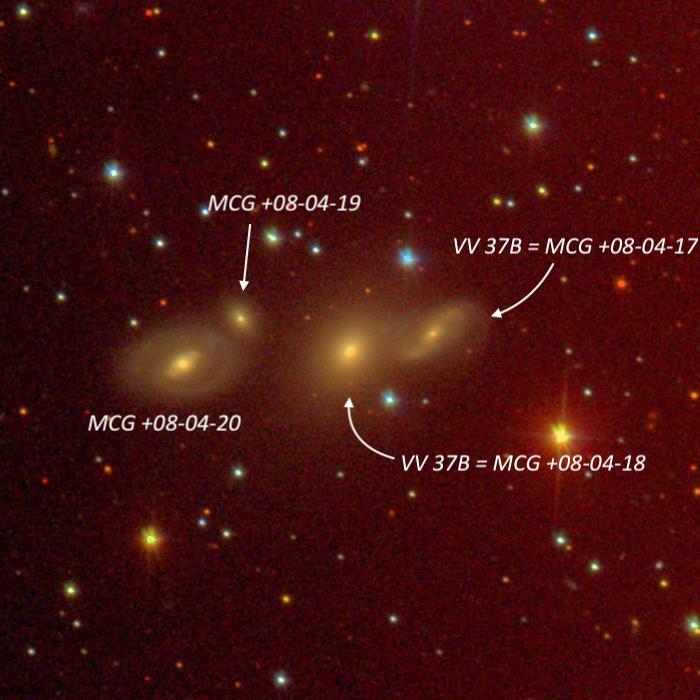
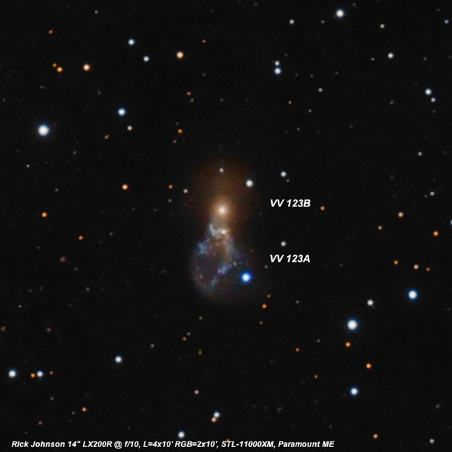
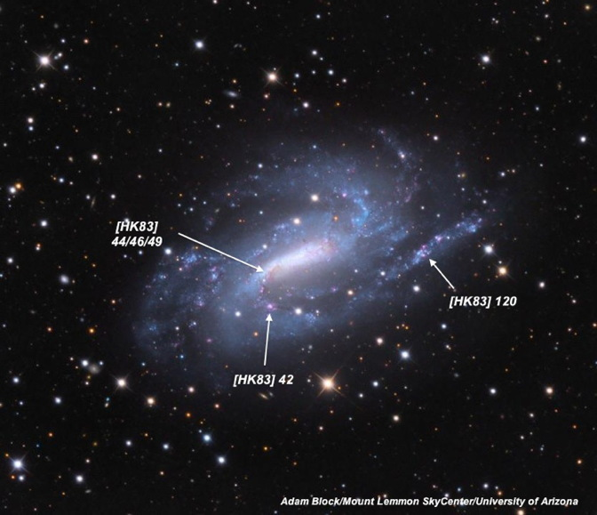
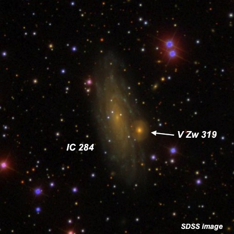
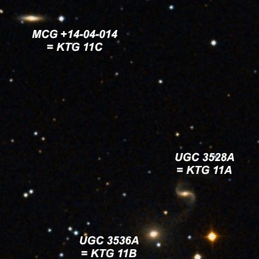
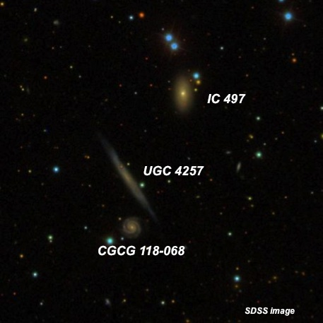
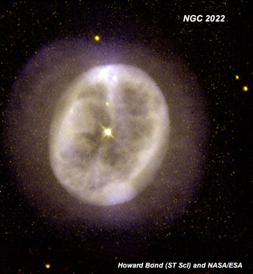

"Winter" observing in California
OR 1/25/14: "Winter" observing in California by Steve Gottlieb
Last Saturday night (Jan 25, 2014) Carter Scholz, Matt Marcus and myself had a very enjoyable winter night observing at Lake Sonoma, about 80 miles north of the Golden Gate Bridge in the Sonoma County vineyards. The weather forecast during the day included a chance of clouds and perhaps soft seeing, but conditions turned out to be quite nice. Although some bands of clouds drifted by from the west while the sky was darkening, most of the sky was clear by the end of astronomical twilight at 7:00. The main issue was the zodiacal cone, which was blazing in the western sky, spanning nearly 90° in the sky up towards the Pleiades. By 8:30 the sky was virtually clear of all clouds and it stayed that way until we packed up around 1:00 AM. Seeing and transparency were both very good for this site -- SQM readings were around 21.4 and I was able to use 375x on galaxies and 750x on small planetaries. There was no wind, no dew and a mild temperature. Sure didn't seem like January observing -- no gloves, no hat, no down jacket!
Steve Gottlieb

V Zw 175 quartet (includes VV 37 ) 02 04 27.0 +45 46 31 Size 1.7' VV 37, the western pair of galaxies in this very compact chain ( V Zw 15 ), consists of VV 37a = MCG +08-04-018 = UGC 1562b and VV 37b = MCG +08-04-017 = UGC 1562a, separated by just 33". At 375x, VV 37a, the brighter eastern component, appeared fairly faint, fairly small, slightly elongated NW-SE, 24"x18", sharply concentrated with a round, very small bright core and a much fainter halo. VV 37b, just 33" W, was extremely faint and small, round, 10" diameter. Based on this description I only picked up the small brighter core. Several stars are nearby with a mag 12.4 star 1.5' WSW, a mag 14.3 star 1.0' NE, a mag 13.6 star 0.8' NW and a mag 14.4 star 25" SW. Situated 3' S of mag 9.4 SAO 37739 . Just 1' E is the close pair MCG +08-04-020 and -019 with the quartet spanning just 1.7' E-W. MCG +08-04-020 is fairly faint, small, elongated 2:1 NW-SE, 20"x10", sharply concentrated with a small bright nucleus and much fainter extensions. Forms a very close pair with MCG +08-40-019 just 30" NW. This compact galaxy appeared extremely faint and small, round, 8" diameter. Despite a CGPG mag estimate of 17.1p, this galaxy was similar (or slightly easier) than MCG +08-04-017 = VV 37b at the west end, which has a CGPG mag of 16.2p.

VV 123 = Arp 141 = UGC 3730 07 14 20.4 +73 28 37 V = 12.5; Size 2.7'x1.0'; Surf Br = 13.4; PA = 171d
At 375x, VV 123B appeared moderately bright, small, round, compact, 20" diameter, high surface brightness. VV 123A , situated just 25" S (nucleus of the Ring component) was cleanly resolved and appeared very faint, very small, round, 12" diameter, low surface brightness. The actual ring, extending south, was not seen.
Here's how it looked in Jimi Lowrey's 48-inch from West Texas at 488x and 610x --- Arp 141 = VV 123 is an unusual interacting system, listed as a Ring galaxy with collider in Madore, Nelson and Petrillo's 2009 "Atlas and Catalog of Collisional Ring Galaxies". At the north end is VV 123B = Madore C1 (collider), which appeared bright, fairly small, round, 20" diameter, sharply concentrated with a very bright nucleus. This is the brightest component in the system. At the south edge of VV 123B (25" S of center) is VV 123A = Madore RN (Ring nucleus), which appeared fairly faint, small, irregularly round, 15" diameter. The ring component extends south of VV 123A and appeared as a faint, moderately large, oval haze, ~60"x30", mostly evident as a brighter arc or tail along the west side. This arc extends about as far south as a mag 14 star which is 1.5' SSW of VV 123B, though VV 123C , a small knot at the south end, was not resolved.

NGC 925 02 27 17.0 +33 34 43 Size 10.5'x5.9'; V = 10.1
On this observation I used 375x and focused on the HII regions in the spiral arms of NGC 925. [HK83] 120/121 is an extremely faint, very small HII knot on the west end of NGC 925, 3.2' from center. This HII complex is near the end of the southern spiral arm, though I couldn't trace the arm itself as far this knot and a mag 14 star lies 0.9' SSE. [HK83] 44 is barely detached off the east end of the central bar and appeared as a very faint 6" knot. A second fainter and even smaller knot, [HK83] 46/49, was occasionally seen ~20" WNW, right at the tip of the bar. [HK83] 42 is another faint, 6" knot along the southern arm, 1.5' SE of center. The location was pinpointed just north of the midpoint of two mag 13.5/14.5 stars oriented E-W at 1.6' separation.

IC 284 03 06 10.2 +42 22 18 V = 11.5; Size 4.1'x2.1'; Surf Br = 13.7; PA = 13d At 200x and 375x, IC 284 appeared moderately bright, large, elongated 2"1 SSW-NNE, at least 3'x1.5', weak concentration to a brighter core. Two mag 15 stars are superimposed on the east edge of the core. V Zw 319 = PGC 11646 is on the SW edge of the halo, 0.7' SW of center! The companion appeared very faint, round, 12" diameter. A mag 11.5/11.5 double at 17" separation lies 2.5' NW. NED has no distance info on V Zw 319, though there is no indication of interaction on the SDSS and an arm from IC 284 is silhouetted on V Zw 319, indicating it may be a background object.

KTG 11 07 05 21 +86 36 28 Size 7.4' UGC 3536A = KTG 11B, the brightest member of the triplet (and the elliptical component of the Arp 96 pair), appeared fairly faint to moderately bright, small, round, 24" diameter, fairly high surface brightness, gradually increases to the center. A mag 14.7 star is just off the SW edge and two mag 10.8/11.9 stars are less than 2' W. Forms a pair with UGC 3528A = KTG 11A 1.5' NW, the faintest member of the triplet. This low surface brightness spiral appeared faint, small, elongated 3:2 E-W, 24"x16". A mag 10.8 star is 1.5' SW. CGCG 362-33 = KTG 11C lies 7' NE and appeared fairly faint, small, elongated 2:1 E-W, 24"x12", weak concentration. A mag 13.5 star lies 0.9' W.

KTG 20 08 10 08 +24 53 54 Size 3.0' IC 497 = KTG 20A is the brightest member of the triplet. At 375x it appeared fairly faint, fairly small, elongated 2:1 N-S, 24"x12", bright core. A 12" pair of mag 12.5-13 stars lies 1' N and a mag 14 star is 27" NW of center. UGC 4257 = KTG 20C, just 2' SE, is an extremely faint, thin edge-on 6:1 SW-NE, 0.6'x0.1', very low even surface brightness. A mag 15.5 star is just off the west edge. CGCG 118-068 = KTG 20B, just 1.0' S, was extremely faint to very faint (slightly higher surface brightness than UGC 4257), round, just 10" diameter. A mag 13 star is 33" SE of center. KTG 20 is probably not a physical triplet as CGCG 118-068 has a much higher redshift.

NGC 2022 05 42 06.2 +09 05 10 V = 11.7; Size 29"x28"
At 500x, this high surface brightness planetary appeared as a fairly bright knotty annulus, slightly elongated SW-NE with fascinating structure. The rim was clearly brighter along an ~200° arc running from the southwest counterclockwise to the northeast. Very small brighter knots glowed at the SW and NE ends with a less defined knot at the NW edge. In general, though, the rim appeared mottled and sparkling. The rim was clearly dimmer along the southeast side, giving a "C" appearance. At 750x, the darker center was also irregular in surface brightness and occasionally, an extremely faint central star sparkled.